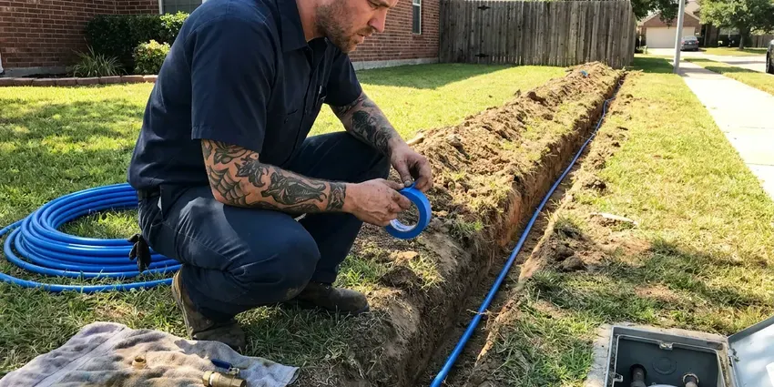
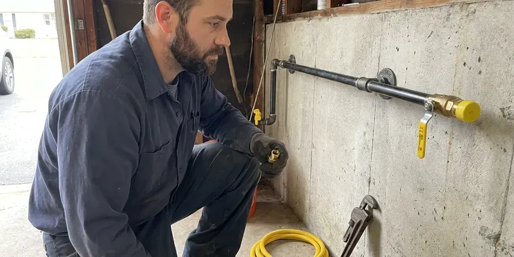

Gas Water Heater Installation in East Lansing, MI
For reliable gas water heater installation in East Lansing, MI, CHV Plumbing is your trusted local expert.
- Same-Day Gas Heater Installs
- Upfront Pricing
- Code Compliant Work
- Transparent Pricing

Get Your New Gas Water Heater Installed Right in East Lansing, MI.
Our experienced technicians are ready to provide quality gas water heater installation for your home.
Expert Gas Water Heater Installation in East Lansing, MI
CHV Plumbing provides quality gas water heater installation services throughout East Lansing, MI. Our licensed plumbers make sure your new unit is installed correctly and safely, meeting all local codes and manufacturer specifications.
Our expertise includes:
- Correct sizing for optimal hot water supply
- Correct venting and combustion air setup
- Expert installation of all major gas water heater brands

Additional Plumbing Installation Services in East Lansing, MI
We install water heaters, pumps, lines, and fixtures across East Lansing, MI with careful, permitted work that passes inspection the first time.




East Lansing water line installation specialists


East Lansing gas line installation specialists

Customers
Why Choose CHV Plumbing for Gas Water Heater Installation in East Lansing, MI?
Choosing CHV Plumbing for your gas water heater installation means choosing peace of mind. We prioritize safety and efficiency, making sure your new system delivers hot water reliably.
- Energy Efficiency, A correctly sized and installed gas water heater operates more efficiently, saving you money on utility bills.
- Longer Lifespan, Professional installation reduces wear and tear, extending the life of your gas water heater.
- Fast Recovery, Gas heaters reheat water quickly for busy households.
Citywide Coverage
We install gas water heaters in garages, utility rooms and closets throughout East Lansing. Our trucks carry venting parts, gas fittings and common tank sizes.
Experienced Team
Our plumbers have installed many gas water heaters and know how to size gas lines and venting correctly. They handle tight spaces and tricky vent runs.
Safety-First Approach
Safety is our top priority during every gas water heater installation. We conduct thorough inspections of gas lines, ventilation and pressure relief valves to prevent any hazards.
Trusted Certified East Lansing Plumbing Services Professionals
At CHV Plumbing, we take pride in providing licensed, certified plumbing services throughout East Lansing, MI. Backed by recognized industry credentials, our experienced plumbers combine technical skill with genuine customer care. Whether it is repair, installation, or maintenance, we follow strict safety and quality standards to deliver lasting results you can trust.
Call Us Now PHCC Plumbing Contractor Recognition
PHCC Plumbing Contractor Recognition Better Business Bureau (BBB) Accreditation
Better Business Bureau (BBB) Accreditation Angi Certified Pro
Angi Certified Pro ISO 9001 Quality Management Certification
ISO 9001 Quality Management CertificationDependable Gas Water Heater Installation Services in East Lansing, MI
Direct Vent Gas Water Heater Installation in East Lansing
Direct vent water heaters draw combustion air from outside and vent exhaust through a sealed system. They are a good choice for tight utility rooms or interior closets. We install the vent kit through an exterior wall with proper clearances. Many direct vent models do not need electricity. They offer safe, dependable operation.

Gas Line Upgrades for Water Heaters in East Lansing, MI
Upgrading to a larger or tankless gas water heater may require more gas flow. We calculate total BTU demand and pipe length to size the line correctly. We install black iron or CSST piping and bond it where required. A properly sized line prevents low flame and poor performance. We pressure test new lines before service.
Brands We Install in East Lansing
We install all major brands of gas water heaters commonly found in East Lansing homes and businesses. Our experience covers Rheem, Bradford White, A.O. Smith, Navien and Rinnai, among others. We can advise you on the best brand and model to suit your hot water demands and budget.
Rheem Gas Water Heater Installation in East Lansing, MI
Rheem gas water heaters are a popular choice for their reliability and modern features. CHV Plumbing offers complete Rheem gas water heater installation services across East Lansing, MI. We handle everything from the natural gas connection to the exhaust flue, delivering strong performance. Our team is familiar with Rheem's installation requirements, including their Guardian System for added safety, providing you with peace of mind.
Power Vent Gas Water Heater Installation in East Lansing, MI
Power vent water heaters use a fan to push exhaust through PVC or other approved vent pipe. This allows installation in places without a chimney or vertical flue. Power vent units need an electrical outlet nearby. We install the vent run to manufacturer specs and check for proper termination. These units offer versatile placement options.
High-Efficiency Gas Water Heater Installation in East Lansing, MI
Upgrade to a high-efficiency gas water heater to reduce energy consumption and lower utility bills in your Michigan home. We install Energy Star rated models from leading brands like Rheem, Bradford White and A.O. Smith, making sure your system is correctly sized and installed for maximum savings.
Gas Water Heater Installation Cost in East Lansing, MI
Standard atmospheric vent gas water heaters usually cost less to install than power vent or tankless units. Venting changes, gas line upgrades and code corrections can add cost. We provide a written quote that includes the unit, labor, permits and haul-away. We also compare operating costs between gas and electric models. That helps you choose the best long-term value.

Bradford White Gas Water Heater Installation in East Lansing
Bradford White is a trusted brand known for its durable and efficient gas water heaters. Our technicians are very experienced in installing their full range of residential and commercial models in East Lansing. We ensure proper setup of the Defender Safety System, precise temperature and pressure relief valve connections and adherence to all manufacturer specifications. You can count on us for a professional and code-approved Bradford White installation.
Gas Water Heater Installation Near Me in East Lansing, MI
Our local team is always ready to respond quickly to your gas water heater installation needs, no matter where you are in East Lansing. You can trust us for prompt, professional and code-compliant service right in your neighborhood.
If you need gas water heater installation near me, our local plumbers can respond fast. We stock popular gas models and venting parts. Many installations are finished the same day.
CHV Plumbing at a Glance
- Licensed and insured plumbers serving East Lansing, MI
- Same-day appointments and 24/7 emergency response
- Upfront, flat-rate pricing before work begins
- 4.9-star rated by 670+ Michigan customers
East Lansing Map
East Lansing Information
- Population
- 48,528
- Area codes
- 517/989/248
- Service area
- East Lansing and communities within 40 miles
- Nearby
- Lansing, Jackson, Flint, South Lyon
A properly installed gas water heater in East Lansing, MI is crucial for reliable performance and long life, and it safeguards your home's plumbing system from leaks and pressure problems. Lake-sourced municipal water in Michigan is moderately hard, so scale gradually builds up in water heaters and faucets.
Expert Services
Trust our professionals for reliable CHV Plumbing solutions in East Lansing, MI.
Our Specialized Plumbing Services in East Lansing, MI
At CHV Plumbing, we provide a complete range of plumbing services across East Lansing, MI. From leak detection to full system installations, our team ensures fast, precise, and affordable service for both residential and commercial properties. Explore our core services below:


How Our Gas Water Heater Installation Process Works in East Lansing, MI
Here is how we install your new gas water heater from start to finish.
Request a Quote
Call us at (810) 380-5918 or fill out our online form to schedule an appointment. We'll discuss your needs and provide a clear estimate.
On-Site Assessment
Our technician will visit your East Lansing home to assess your current setup, discuss options and confirm the best gas water heater for your property.
Professional Installation
We will carefully install your new gas water heater, including all gas lines, water connections and venting, ensuring full compliance with Michigan codes.
Frequently Asked Questions About Gas Water Heater Installation in East Lansing
The cost of gas water heater installation in East Lansing, MI typically ranges from $1,200 to $3,500, depending on the unit type, capacity and complexity of the installation, such as converting from electric or upgrading gas lines. We provide clear, upfront pricing after assessing your specific needs.
Rusty water, leaks, pilot problems and slow recovery are common signs. If your heater is over 10 years old, replacement may be the better option.
It's recommended to have your gas water heater professionally serviced once a year. Regular maintenance can extend its lifespan, improve efficiency and catch potential issues before they become major problems, supporting safe operation.
Regular maintenance, such as annual flushing of the tank to remove sediment and checking the anode rod, can noticeably extend your gas water heater's lifespan. Our team can advise on best practices and offer maintenance services.
Yes, many modern gas water heaters, both tank and tankless models, are designed with energy efficiency in mind. Look for units with higher Energy Factor (EF) ratings or consider Energy Star certified models to reduce your energy consumption and utility bills.
Most standard gas water heater installations take between 3 and 5 hours. More complex installations, such as converting to a tankless unit or significant gas line adjustments, might take a full day. We work quickly to minimize disruption to your home.
New gas water heaters typically come with a manufacturer's warranty ranging from 6 to 12 years on the tank and components. CHV Plumbing also provides a labor warranty on our installation services, giving you peace of mind.
Most new gas water heaters come with a manufacturer's warranty ranging from 6 to 12 years on the tank and components. CHV Plumbing also provides a warranty on our installation labor. We will explain both during your consultation.
What People Are Saying About Our Plumbing Experts?

Laura S.
I scheduled a water heater replacement, and the team made the process smooth and affordable. The new unit works perfectly, and they cleaned up after completing the job.
Water Heater Replacement · East Lansing, MI
Mark T.
When our office needed drain cleaning, CHV Plumbing provided quick, reliable service. The plumber arrived on time and made sure every drain flowed perfectly before leaving. Very satisfied.
Drain Cleaning · East Lansing, MI
Emily R.
I called CHV Plumbing for plumbing repair, and the technician was fast, polite, and thorough. They explained the problem clearly and fixed it the same day. I will definitely hire them again. Highly recommended!
Plumbing Repair · South Lyon, MI
James P.
Our commercial plumbing system had a leak under the sink, and CHV Plumbing handled it professionally. The plumbers arrived quickly and restored everything without disruption to our customers.
Commercial Plumbing · Jackson, MIRobert G.
The trenchless sewer replacement saved our front yard. They walked us through the camera inspection footage first so we knew exactly what we were paying for.
Sewer Line Replacement · South Lyon, MI
Daniel K.
A pipe burst at 11 pm and they actually answered. The plumber showed up within the hour, shut everything down, and had us back to normal the next morning. Could not ask for more.
Emergency Plumbing · South Lyon, MI